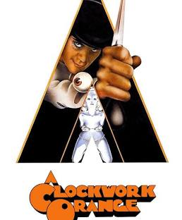

Greatest Movies Of All Time..
My Favourite Picks
Once i heard a beautiful Quote that said:
Cinema is the mirror,
Where we often see ourselves..
-
A Clockwork Orange
Directed By Stanley Kubrick.
IMDB:8.2/10
One of the Greatest Movies Directed
It is Crime and Sci-Fi Movie Which involves good amount of Utra Violence. -
Taxi Driver
.jpg)
Directed By Martin Scorcesse.
IMDB:8.2/10
Depicts the Loneliness to which i can relate
And he is just Psychotic and Kind like me,
And also i just love to watch Robert De Niro Movies. -
Into the Wild
.jpg)
Directed By Sean Penn.
IMDB:8.1/10
Into the Wild is a 2007 American biographical adventure drama film
which really gave me a lot of Wisdom and understanding About Life. -
The Pianist
.jpg)
Directed By Roman Polanski.
IMDB:8.6/10
It is based on the autobiographical book The Pianist (1946),
a memoir by the Polish-Jewish pianist, composer and Holocaust survivor Władysław Szpilman. -
Her
.jpg)
Directed By Spike Jonze..
IMDB:8/10
It's an Ultimate Sad Movie and i often find myself in the spot of Theodre
And Probably the most heart breaking Movie i've ever seen.